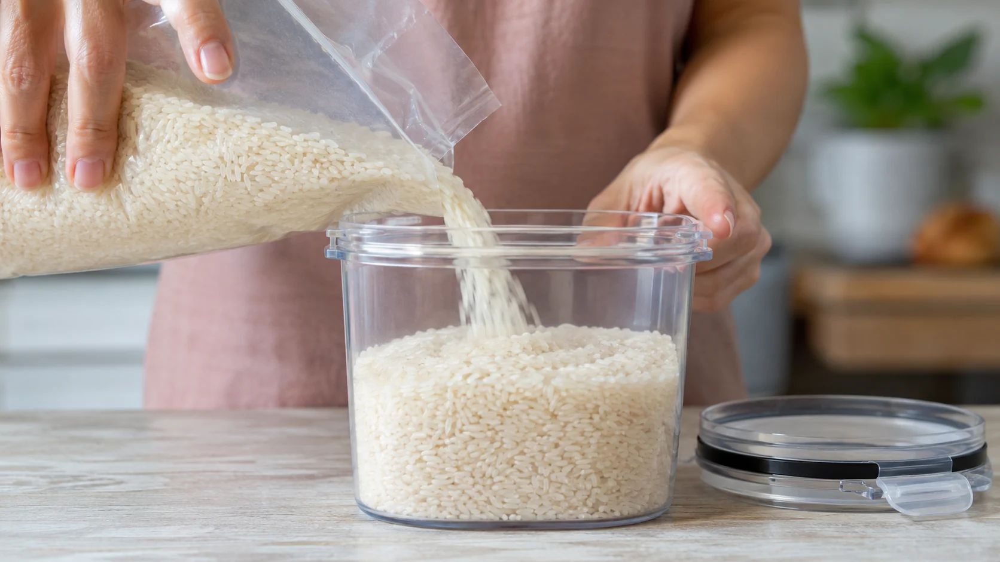
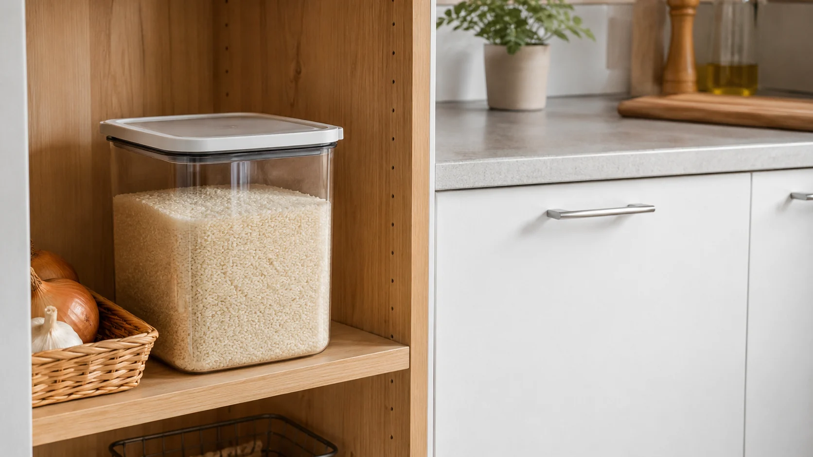
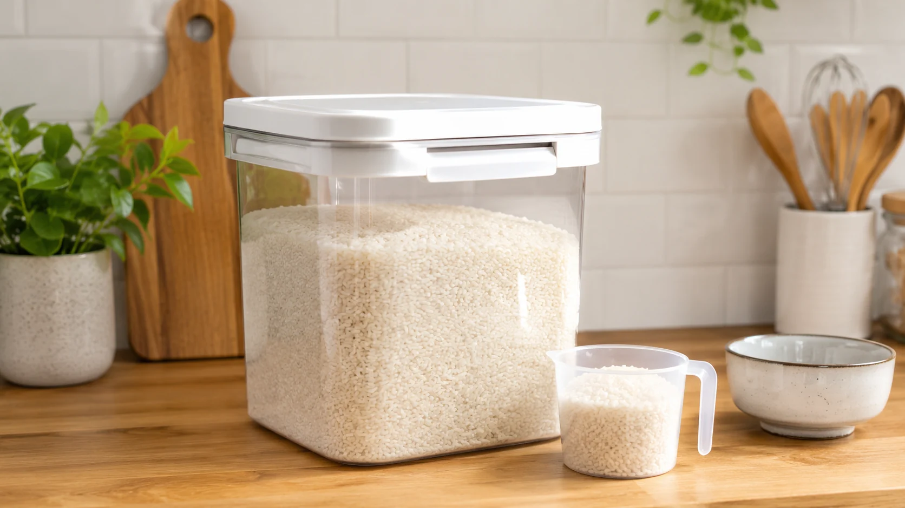

쌀벌레가 생긴 뒤에야 알게 되는 쌀 보관법, 생각보다 예민합니다
쌀벌레가 생기는 원인과 쌀 보관 온도, 밀폐 용기, 여름철 주방 관리법을 경험담처럼 풀어낸 생활상식 콘텐츠입니다.
쌀통에서 작은 벌레를 보면 누구나 잠깐 멈칫하게 됩니다
여름이 되면 쌀벌레 사진이 종종 올라옵니다. 누군가는 그냥 씻어서 먹어도 된다고 하고, 누군가는 전부 버려야 한다고 말하면서 댓글이 꽤 세게 갈리곤 합니다.
저도 쌀통을 열었다가 작게 움직이는 걸 본 적이 있습니다. 그때는 정말 밥맛이 뚝 떨어지고, 괜히 주방 전체가 지저분해진 느낌이 들었습니다.

그런데 찾아보고 겪어보니 쌀벌레 생기는 이유는 집을 더럽게 써서라기보다 온도, 습도, 보관 기간, 포장 상태가 맞물리는 경우가 많았습니다.
쌀은 매일 먹는 식재료라서 익숙하지만, 보관은 생각보다 예민합니다. 특히 여름철 쌀 보관은 한 번 방심하면 금방 티가 납니다.
제가 느낀 건 쌀벌레 문제는 발견 후 대처보다 발견 전 보관 습관이 훨씬 중요하다는 점입니다.

대용량으로 사면 무조건 이득이라는 말, 여름에는 다시 생각해봐야 합니다
쌀 보관법에서 가장 먼저 봐야 할 건 구매량입니다. 가족 수가 많지 않은데 큰 포대를 오래 두면 벌레가 생길 가능성이 높아질 수 있습니다.
저는 예전에는 쌀을 크게 사두면 마음이 든든하다고 생각했습니다. 그런데 여름 한철을 지나면서 오래 보관하는 게 항상 경제적인 선택은 아니라는 걸 알았습니다.
특히 싱크대 아래처럼 습기가 차기 쉬운 곳, 햇빛이 드는 베란다, 온도가 오르는 다용도실은 쌀통 관리에 불리할 수 있습니다. 쌀은 서늘하고 건조하며 밀폐가 되는 곳에 두는 쪽이 낫습니다.
밀폐 용기에 나눠 담는 것도 도움이 됩니다. 포대째 보관하면 한 번 열 때마다 공기와 습기가 들어가고, 작은 틈으로 벌레가 이동하기도 쉽습니다.
여기서 논쟁이 생깁니다. 냉장 보관이 최고라는 분도 있고, 냉장고 공간을 쌀에 쓰는 건 비효율이라는 분도 있습니다. 저는 적은 양이라면 냉장이나 김치냉장고 일부 공간을 활용하는 쪽이 꽤 현실적이라고 봅니다.

이미 생긴 쌀벌레를 골라내면 끝일까요, 저는 그렇게 단순하진 않다고 봅니다
쌀벌레 예방을 놓쳤다면 먼저 쌀 상태를 잘 봐야 합니다. 벌레가 아주 일부만 보이는지, 알갱이 사이에 가루나 냄새가 있는지, 보관 용기 전체에 퍼졌는지에 따라 판단이 달라집니다.
저는 벌레가 생긴 쌀을 보고 처음에는 햇볕에 말리면 괜찮지 않을까 생각했습니다. 하지만 찝찝함이 남는다면 억지로 먹는 게 답은 아니라고 느꼈습니다.
쌀을 버릴지 말지는 각자의 기준이 다르지만, 적어도 쌀통은 비우고 깨끗하게 씻은 뒤 완전히 말려야 합니다. 용기에 습기가 남으면 다시 보관해도 같은 문제가 반복될 수 있습니다.
주방 주변에 흘린 쌀알이나 가루도 정리하는 게 좋습니다. 작은 잔여물이 벌레를 부르는 원인이 될 수 있고, 이것 때문에 깨끗한 새 쌀까지 영향을 받을 수 있습니다.
결국 여름철 쌀 보관은 많이 사두는 능력보다 적당히 사고 빨리 먹고 제대로 밀폐하는 습관에 가깝습니다. 저는 이걸 겪은 뒤로 쌀을 살 때 가격보다 소비 속도를 먼저 보게 됐습니다.
쌀벌레는 한 번 보면 꽤 오래 기억에 남습니다. 그래서 더더욱 평소 보관이 중요합니다. 여러분은 쌀을 많이 사서 오래 보관하는 편인가요, 아니면 조금씩 사서 빠르게 먹는 쪽이 더 낫다고 생각하시나요.